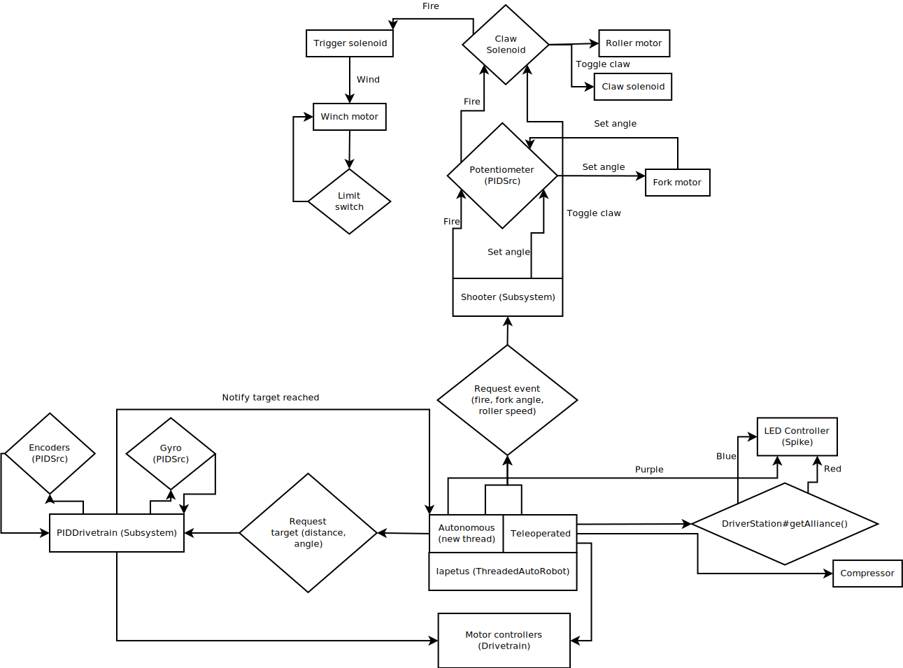

What is this?
Iapetus is the working name for FRC 3161’s robot code for the 2014 season. For more information about the team, or the robot for which this code was written, please visit http://team3161.ca.
Introduction
Iapetus marks the first robot code system built by Team 3161 with the express intention of producing reusable code, both for Team 3161 and others.
The package ca.team3161.iapetus contains robot-specific code. The other packages (ca.team3161.lib.*) are intended as reusable modules. Each such class has at least skeleton documentation explaining its purpose, but for ease of reference and a high-level overview, this document will explain the concepts behind the Iapetus libraries.
Design
The design intended by these libraries are a main robot class, subclassed from ThreadedAutoRobot, which defines the robot’s behaviour in autonomous, teleoperated, and disabled modes, in a manner very similar to the standard IterativeRobot provided by FRC. This base class provides for a robot’s autonomous routine to be performed in a separate thread from the main robot thread, allowing for a simpler, more straight-forward action scripting style, without having to rely on myriad Timer objects.
Major component groups of the robot can be modelled as Subsystem subclasses, which allows for components to be monitored and controlled in the background by a new thread. This allows physical safety to be ensured, for example, by having a background thread monitor a limit switch to ensure that a motor controller shuts off, even if the main robot class' logic fails to check for this condition.
As an example, 3161’s 2014 main robot code is called Iapetus and is a subclass of ThreadedAutoRobot. Our major component groups include our shooting mechanism, encapsulated in the class Shooter, which is a subclass of Subsystem. This subsystem automatically takes care of ensuring that our winch does not overdraw, and that our arm maintains position using PID control. We also have a Subsystem that handles PID-corrected driving in autonomous mode, which is in PIDDrivetrain. This drivetrain continuously corrects itself to reach PID targets, while the autonomous script thread is able to request these targets and go to sleep until they are reached.

Class Overview
IO (ca.team3161.lib.utils.io)
File and DriverStation IO classes
DriverStationLCD
Provides a nice, readable implementation of a system to write to the digital LCD display on the Driver Station software. Uses the same backend as FIRST’s official DriverStationLCD class.
Controls (ca.team3161.lib.utils.controls)
Interfaces and implementations for controllers for human operators to use
Gamepad
An interface defining a physical gamepad type controller. These are expected to have two thumbsticks, a directional pad, and an assortment of buttons. They may have additional functionality as well, but this is the minimal set. The thumbsticks' Y-axes may optionally be inverted.
Joystick
A thin wrapper overtop of FIRST’s provided Joystick class, offering deadzone filtering and Y-axis inversion.
LogitechDualAction
A Gamepad implementation modelling the Logitech DualAction USB gamepad. In addition to the methods required by the Gamepad interface, this class offers convenience methods to check the "bumpers" and "triggers" (shoulder buttons) on the controller. It also offers deadzone filtering, so that very small values returned by the thumbsticks can be ignored, in case the gamepad is not properly zeroed, or has damaged springs, etc. The Y-axes of the thumbsticks may optionally be inverted.
General utilities (ca.team3161.lib.utils)
Assertions, PWM value validation, floating point rounding, etc.
Assert
Assertions. Contains static methods which take a boolean condition and throw an exception if these conditions do not hold. Useful for debugging and during development.
Utils
Pretty printing arrays, rounding doubles, and ensuring PWM values fall within the range [-1.0, 1.0].
PID (ca.team3161.lib.robot.pid)
PID control libraries. If you don’t know what PID is or what it’s for, take a look at Team 3161’s Resources page.
AnglePidSrc
A PIDSrc which returns values as angles.
EncoderPidSrc
A PIDSrc which uses an Encoder as its backing sensor.
GyroPidSrc
An AnglePIDSrc which uses a Gyro as its backing sensor.
PID
A PID loop, which uses a PIDSrc and a set of constants to iteratively determine output values with which a system can reach and maintain a target value.
|
Warning
|
Using PID control rather than operator control places the physical safety and wellbeing of your robot and anybody near it in the hands of the correctness of your PID system. Please ensure that your constants are the correct sign (positive vs negative) and of reasonable order (start very, very small) before using a PID-controlled system. |
PIDSrc
An interface with a single method, getValue(). These are used as backing sensors for PID objects. Encoders, Gyros, Potentiometers, Accelerometers, and Rangefinders are examples of backing sensors that can be usefully wrapped by a class implementing PIDSrc.
PIDulum
A PID loop for the specific application of an inverted pendulum system. This works the same as a standard PID, but with an additional "Feed Forward" term, which is used to compensate for gravity pulling on the pendulum.
PotentiometerPidSrc
An AnglePIDSrc that uses two known points (voltage, angle) of a rotary potentiometer and is able to then convert measured voltages into corresponding angles. Generally the two known points will be the endpoints of the degrees of freedom of whatever system this sensor is monitoring. The angles are arbitrarily defined by the user, and all returned angles will simply scale between these end points, so long as the arbitrarily defined endpoint angles have correctly measured corresponding voltages.
|
Warning
|
Be absolutely sure that you have correctly measured and entered the range of motion endpoints of your physical system. Depending on the potentiometer you use and the way it is mounted, your "higher angle" may actually have a lower voltage. This is not a problem and you should not try to correct it by swapping the voltages between endpoints when you instantiate a PotentiometerPidSrc, as this would result in your system moving in reverse. |
Robot subsystems (ca.team3161.lib.robot)
Higher level components and control systems defining major pieces of a robot.
Drivetrain
A container object which groups heterogenous SpeedControllers and allows them to be managed as a unit. For example, a robot might use two Victors and two Talons to control its drive motors. Two Drivetrain object could then be constructed, each controlling one side of the robot, and managing one Victor and one Talon. These Drivetrain objcets can then be used in the robot code in the same manner as a Talon or Victor would be, but now only one method call needs to be performed rather than two for each change required to each side of the robot’s drive controllers.
PIDDrivetrain
A Drivetrain controller that uses PID objects and is able to accurately drive straight and turn by degrees. This is a type of Subsystem - the PID control is done in a background thread. In particular, two SpeedController instances are controlled, with two Encoders used to measure travelled distance, and a Gyro used to ensure a straight course while driving. The Gyro can also be used to orient the robot to face a specific direction.
ResourceTracker
A system allowing Subsystems to safely operate concurrently without using the same resources (such as SpeedControllers, sensors, relays) and being interrupted by other subsystems. Any Subsystem will, before running its task, attempt to acquire all resources listed using require() in its defineResources() method. If any of these resources cannot be acquired in a timely fashion, the task skips this iteration and retries again later. If only a subset of its required resources were acquired, or if the task successfully runs, then it releases all resources until its next run. Resources may fail to be required if they are currently held by other running Subsystem tasks.
Subsystem
Subsystems are objects that model major physical component subsystems on robots. Subsystems have a list of required resources and a task that they run in the background. This task can be run once or periodically. If being run periodically, the wait time between iterations is configurable. A Subsystem might be given references to, or contain instances of, PID objects and SpeedControllers (Drivetrain instances, perhaps!), and could then be used to implement PID-controlled driving, without having to rely on using any timers or explicitly writing any looping behaviour to iteratively calculate PID targets. Subsystem is an abstract class and so a Subsystem’s actual concrete behaviour can vary greatly between different subclasses.
|
Warning
|
Failure to require() the correct resources in defineResources() may lead to concurrency issues and indeterminate behaviour. Ensure that all of your Subsystems require() all of their resources. |
ThreadedAutoRobot
A subclass of IterativeRobot. Autonomous is run in a new Thread, leaving the main robot thread responsible (generally) solely for handling FMS events, Watchdog, etc. This allows autonomous scripts to use convenient semantics such as Thread sleeping rather than periodically checking Timer objects. A method "waitFor" is supplied which should be used in favour of Thread.sleep as it provides assurances that the autonomous script will not run over the length of the autonomous period. As a replacement for teleopPeriodic, the new method teleopThreadsafe should be used. Use of this method ensures that the autonomous background thread and the main robot thread (running teleop code) will not coexist, which would cause indeterminate runtime behaviour.
Team 3161’s 2014 robot (ca.team3161.iapetus)
2014 robot-specific code.
Constants
A small collection of constant values, such as Gamepad ports, roller/shooter speeds, fork position angles, etc.
Iapetus
The main robot behaviour implementation. This is a subclass of ThreadedAutoRobot and defines what exactly the robot does in various modes. It makes use of PIDDrivetrain for autonomous, Joystick and LogitechDualAction for teleop control, Drivetrain for SpeedController management, etc.
Shooter
A Subsystem modelling our robot’s combined mechanism for handling game pieces. This includes a roller, a piston-controlled claw to which it is mounted, as well as a winch mechanism and a solenoid to release it which is used to propel game pieces. The background Subsystem task is used primarily to monitor how far back the winch has been drawn, ensuring that the robot will not physically damage itself no matter what happens in the main teleop or autonomous routines.